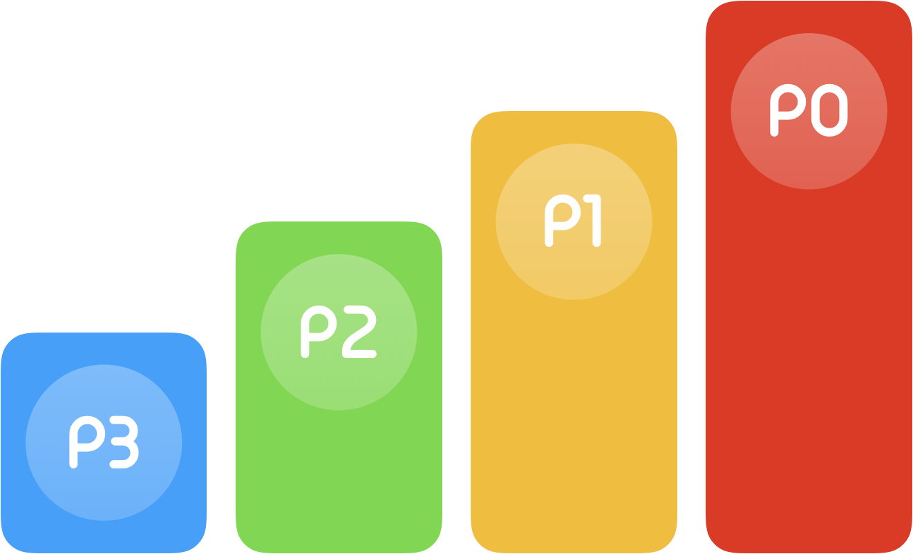

Prioritize Many Important Items
What is the interviewer looking for:
Conflicting priorities happen on a regular basis to many of us. The interviewers want to hear how you assess the situation and pick up the right tools. Below are some popular ways one can use:
- Deprioritize some items,
- Reduce scope to focus on what you have to get done by the deadline,
- Negotiate the deadline,
- Ask for help, and
- Organize time effectively.

Best practice to answer:
Use the STAR framework to choose a situation you were in, the task that had to be done, the challenges you faced, the actions you took and the resulting outcome. Demonstrate how you analyzed the situation, why you decided to take certain actions, why did you de-prioritize some items, how did you get buy-in to reduce scope or change deadline, whom did you go to seek help, your manager or someone else. You want to give an overall picture to illustrate that you are comfortable in using different tools as needed.
Common pitfalls:
Question variations: